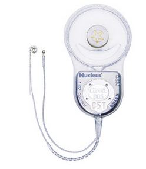

THEORIZING 21C
The Secret Life of Our Prostheses
Belinda Barnet
We are born into a world of things. From masking tape to Mandarin, from computers to swaddling cloth, we enter into an existing cultural and technical system. Our sensory, cognitive, and motor faculties are put to work immediately to learn what others before us have learned: to make sense of these things, how to operate them, and our place among them. This is a long process for infants--their cognitive function is literally shaped through what is called synaptic or axon pruning [1] (if there are any Cultural Determinists in the room, they should leave now and read some neuroscience journals). We must learn how to speak, how to use pens and toothbrushes and iPads, how to ride a bike, how to manipulate a spoon so the peas don't (or do) fall onto the floor. When we are born, we enter into something that we have not individually created but which, nevertheless, shapes our experience of the world. This is what Heidegger calls the already there, this "past that I never lived but that is nevertheless my past, without which I would never have had a past of my own." [2] It is also what Douglas Engelbart, the inventor of the WIMP interface and the computer mouse, calls our "augmentation system." [3]
Our augmentation system is more than just technology; it includes the whole subset of learned behaviours and physiological capabilities that allow humans to modulate and interact with our environment. It includes steering wheels and laptops--but it also includes the social structures we live within, the techniques and discourses we acquire, the "training, knowledge and skills that have to be installed as well as language, an extremely important invention." [4] This is a giant, complicated structure that has evolved over generations. Most importantly, the elements within this augmentation system are acquired. We are not born with them; we are born into them and take them on as our own.
For Engelbart, language is the most important tool in this system. We are not born with the ability to speak Spanish or English; our "native" tongue is no such thing. Language existed before us and it will continue after us--it transcends our short human lives. For a Deaf child that language is acquired through Sign. For a hearing child, that language is acquired through speech. Either way, it enters into memory and becomes what Derrida calls a "prosthesis of the inside"; [5] our experience of the world is shaped in advance by the tools we acquire to understand it. In the narrative that follows, let us not forget this acquisition process; that language itself is a technology--for those who are fortunate enough to acquire one. A human must be born with the ability to hear if they are to speak. My daughter was born without the ability to hear, and she has entered into language through another acquired technology: the Cochlear Implant.
Every morning I retrieve two small sound processor units from the table where they have spent the night: safe, dry, away from dust, heat, and the enemy of all microprocessors: moisture. The batteries are rechargeable; they have been sitting in their Nucleus? Charger sockets attached to mains power for ten hours and the lights on the module are now a steady green. The Cochlear? CP920 Sound Processor units are covered in thin silicone; this protects the devices from wear and tear and includes a small earhook to attach them to a human being. Emerging from the side of each processor is a coil cable attached to a circular magnet: the processor picks up sound through a tiny microphone on the top of the device, converts that sound to electrical signals inside the processor and then sends those signals via an implant directly to the auditory nerve. This will only occur when the magnet is placed above its partner in life-as-an-object, the Cochlear Implant; the receiver/stimulator for this nestles under the skin in the mastoid bone. "Things like this exist not just for us, but also for themselves and for one another," writes Ian Bogost. [6]
A Cochlear Implant is in reality not one but two units--one internal, one external; they are created of and for one another, like an elementary particle and its antiparticle. They have a secret life, a secret language all their own. I have been thinking about this relationship for fourteen months now, from the moment she was implanted. I have been thinking about how their relation sits inside rather than outside the being of the devices; for this reason I am drawing here on Bogost and Engelbart--not Latour. Though Actor Network Theory is very useful for explaining how material objects and semiotic networks might come together and act, it does not grant objects themselves the intentionality to interact. These two devices put paid to the idea that a "network of relations" exists outside the silicone shell of the objects themselves. Their internal workings have been engineered for one another; they are finely tuned to operate upon one another; they "mesh with one another, acting and reacting to states while still keeping something secret." [7]
(External) Nucleus CP920 Processor

(Internal) Cochlear Nucleus Freedom Contour Advance CI24RE
The external processor is programmed (or "mapped") specifically for each implant; the process can take months. If you accidentally wear a different processor--a processor from a different ear for example--the resulting sound is distorted (this "may cause extreme discomfort" warns the Cochlear Americas pamphlet [8]). A Cochlear Implant is a finely tuned neurostimulating device; the most clinically successful neurostimulating device of its era. In media theory we have wheeled out the figure of the cyborg to explain posthumanism for decades now, but a real neuroprosthetic has just crashed my party--"the first of an emerging class of neuroprosthetic devices," as Stuart Blume writes. [9]
Given this, how does one understand what Bogost calls the "speculative fictions of [its] processes, [its] unit operations"? [10] There is a pairing, a mapping, a process that actually occurs in concert with the neurons of the brain. This pair of devices is shaping her understanding of things, and of her place among them. Most importantly, it has given her access to my language, to the language that I have learned to speak and that she can now speak.
Had she not been implanted she would still have entered into a language that existed before her and will continue after her: Sign. Sign has a rich and complex structure, different in both mode and syntax from spoken English. It, too, alters the brain structure of those who acquire it, but is a different technology and the cognitive changes are thus different: Sign enhances the visual cortex, where there is remarkable, almost magical, growth.
The striking enhancements of perception and visual intelligence that go with [Sign] acquisition, shows us that the brain is rich in potentials we would scarcely have guessed of, shows us the unlimited plasticity and resources of the nervous system, the human organism, when it is faced with the new and must adapt. [11]
It is my daughter's auditory cortex that is now evolving at a remarkable pace. Before I witnessed this process I was already convinced that technologies shape us; I just didn't realize how quickly this adaptation, this change, occurs.
The internal Cochlear C124RE unit is comprised of platinum, titanium, and silicone elastomer. It sits, imperceptible but undeniably there, behind the ear and inside the cochlear. It includes a receiver/stimulator that decodes the electrical signals sent by the processor and a 22-electrode array curled inside the cochlear that will transduce the electrical pulses at various positions in approximation to ganglion cells. Professor Graham Clark, the inventor of the Australian Cochlear Implant, spent many years researching how "the place and temporal coding of sound frequencies could be partly replicated by multiple-channel stimulation of the auditory nerve." [12]
To activate the external units, I remove two batteries from the charger, twist and click them onto the sound processors and watch them blink to life. As they sit snugly in my hand their indicator lights blink green twice; this means they are running (or intend to run) program 2. They then begin to flash orange every second--this means one of two things: the coils are not connected to their partner-devices and cannot run their operations, or they are connected to the wrong implant. Although Cochlear doesn't call it as such, I interpret it as a "distress" signal. The devices are saying: Please connect us to the implant.
I gently pull her blonde curls aside and place the magnets above the receiver/stimulators implanted under her skin. Her hair tumbles back over the magnets as they fall softly into place; they begin to work immediately. She brightens, turns to me, and asks me to put on her sparkly shoes. Her words are perfect--perfect for a two-year-old, indistinguishable from the speech of her peers. She can hear her own voice too; it is converted back to electrical pulses and fed through the device to her brain, processed and augmented before it even appears to her. The device enables her to speak, and it enables her to hear sounds that I cannot hear: I am Deaf too, though not enough to implant (one must be profound-severe to implant; I am only profound-mild). She can also locate the direction and distance of sounds as she has bilateral implants: One device is enough for speech, but two devices are required for directional hearing. [13]
After her implants are in place, I go back up to my bathroom and retrieve two wet silicone hydrogel contact lenses from their case. They are soft, flimsy things; the material they are constructed from allows more oxygen to pass through than rigid gas permeable lenses, but it tears and picks up protein easily. I rub a cleaning solution into each, rinse them with saline and place them in my eyes: suddenly the world is (relatively) crisp and clear, where once it had been blurred and double. These lenses, for the moment, enable me to see, to drive, to write, to operate my devices, and to care for the various prostheses our family requires. Two old, "dead" lenses sit at the back of my cupboard in a plastic container; discarded and forgotten, they have been deprived of moisture. Unlike Cochlear Implants, hydrogel lenses absorb and in fact require moisture; without it they have shriveled into tiny hard discs.
With our prostheses in place, we are ready to face the day: reinvented, augmented, enabled by our devices. Importantly, these devices also have their own material limits, operations and requirements (like moisture, or a lack of moisture; like a secure connection between the receiver/stimulator and the magnet; like a partner to talk to) in order to carry out their own processes. Whether it is language, Cochlear Implants, contact lenses, or teaspoons, the technical artefacts that surround us shape our experience of the world from the moment we are born. These technologies have their own internal workings; they interact in meaningful and intentional ways; they exist in and of themselves. The language you speak or sign, for example; it is a gift you receive from others, but it has a life, a structure, and limits of its own. Perhaps in the future, Bogost writes, "radical philosophers will raise not their fists but their hammers." [14]
Notes
----------------
[1] G. Chechik, I. Meilijson, and E. Ruppin, "Synaptic pruning in development: a computational account," in Neural Computation 10.7 (1998), 1759-77.
[2] Martin Heidegger cited in Bernard Stiegler, Technics and Time, 1: The Fault of Epimetheus (Stanford: Stanford University Press, 1998), 140.
[3] Douglas Engelbart, "The Augmented Knowledge Workshop," in A History of Personal Workstations, ed. Adele Godberg (New York: ACM Press, 1988), 189.
[4] Ibid, 216.
[5] Jacques Derrida, Archive Fever: a Freudian Impression, trans. E. Prenowitz (Chicago: University of Chicago Press, 1996), 19.
[6] Ian Bogost, Alien Phenomenology, or What it's Like to Be a Thing (Minneapolis: University of Minnesota Press, 2012), 50 (emphasis in original).
[7] Ibid, 27.
[8] "Nucleus® CI422 cochlear implant with straight electrode" (Cochlear Limited, 2012), 13.
[9] Stuart Blume, The Artificial Ear: Cochlear Implants and the Culture of Deafness, (New Brunswick, NJ: Rutgers University Press, 2010), 57.
[10] Bogost, 34
[11] Oliver Sacks, Seeing Voices (Los Angeles: Vintage Books, 2000), xiii.
[12] G.M. Clark, "The multiple-channel cochlear implant: the interface between sound and the central nervous system for hearing, speech, and language in deaf people--a personal perspective," in Philosophical Transactions of the Royal Society B: Biological Sciences 361.1469 (2006), 791.
[13] Interestingly, it is easier for a child to develop directional hearing if they are implanted early (preferably before 2 years of age) but this ability is not guaranteed in an adult.
[14] Bogost, 111.
----------------
Dr. Belinda Barnet is Lecturer in Media at Swinburne University of Technology, Hawthorn, Australia. Her research focuses on media history, technical evolution, and digital media. Her recent book is Memory Machines: the Evolution of Hypertext (London: Anthem Press, 2013).
© CTheory. All Rights Reserved